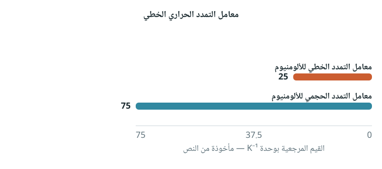

معامل التمدد الحراري الخطي
Coefficient of Linear Thermal Expansion
مقدار تغيّر طول وحدة من المادة لكل كلفن، منسوباً إلى الطول المرجعي. رمزه α ووحدته K⁻¹، وللألومنيوم 25×10⁻⁶ K⁻¹.
معامل التمدد الحراري الخطي هو تغيّر الطول منسوباً إلى الطول المرجعي عند ضغط ثابت، ويُعطى بوحدة الكلفن المقلوب. يعرّفه المعيار ISO 11359-2:2021 في البند 3.1 بالصيغة α = (1/L₀)(dL/dT)_p، ويعرّف في البند 3.2 المعامل المتوسط بالصيغة α = (1/L₀)(ΔL/ΔT) بين درجتي حرارة، مع حرارة تمثيلية تساوي متوسط الدرجتين. وتنص الملاحظة 2 على البند 3.2 أن معامل التمدد الحجمي يُستخرج من الصيغتين نفسهما باستبدال الطول بالحجم، فيبقى الرمز α ويُحدَّد النوع لفظياً. وعملياً تُقرأ القيمة من جدول للمادة: جدول 13.2 من College Physics يعطي للألومنيوم α = 25×10⁻⁶ لكل درجة وβ = 75×10⁻⁶، أي ثلاثة أمثال الخطي في مادة متناحية. والفصل بين الصيغة التفاضلية والمتوسطة ليس شكلياً: α يتغيّر مع الحرارة، فالمتوسط بين درجتين هو ما يُستعمل في حساب هندسي على مدى حراري واسع.
كيف تعمل الظاهرة؟
التمدد نتيجة مباشرة لشكل منحنى طاقة الوضع بين الذرات: المنحنى غير متماثل حول موقع الاتزان، فالاهتزاز الحراري بسعة أكبر يزيد متوسط المسافة بين الذرات لا سعتها وحدها. لذلك يزداد الطول مع الحرارة بلا قوة خارجية، ومعدل dL/dT يتناسب مع عدد الذرات في الاتجاه أي مع L₀، وهذا سبب القسمة على L₀ حتى يصير α خاصية مادية لا خاصية جسم. وفي المواد المتناحية يتمدد كل بعد بالنسبة نفسها، فيصير تغيّر الحجم مجموع الأبعاد الثلاثة أي 3α ويبقى الشكل متشابهاً. وفي البلورات غير المتناحية يتغيّر α مع الاتجاه، ويظهر ذلك عملياً في الصفائح والألياف والخشب.
العلاقة بالأرقام
الصيغة التفاضلية α = (1/L₀)(dL/dT)_p، والمتوسطة α = (1/L₀)(ΔL/ΔT). الحساب خطوة بخطوة لقضيب ألومنيوم: من الجدول α = 25×10⁻⁶ K⁻¹؛ بفرض L₀ = 1.000 m وΔT = 50 K؛ إذن ΔL = 25×10⁻⁶ × 1.000 × 50 = 1.25×10⁻³ m = 1.25 mm. والانفعال ε = ΔL/L₀ = 1.25×10⁻³ أي 1.25 جزء في الألف. وللحجم: β = 3α = 75×10⁻⁶ K⁻¹، فـ ΔV/V₀ = 3αΔT = 75×10⁻⁶ × 50 = 3.75×10⁻³ أي 0.375%؛ ولو كان الجسم لتراً (10⁻³ m³) لصار ΔV = 10⁻³ × 3.75×10⁻³ = 3.75×10⁻⁶ m³ = 3.75 cm³. ووحدة α هي 1/K لأن البسط طول والمقام طول مضروب في كلفن، فيختفي الطول ويبقى مقلوب الكلفن.
مفاهيم متقاربة
الخلط الأول استعمال α الخطي لسائل أو غاز، ولا معنى له لأن الحجم هو المتغيّر المقيس فيُستعمل β = (1/V)(dV/dT). الثاني استعمال α كثابت عبر مدى حراري واسع؛ فهو يتغيّر مع الحرارة بنسبة معتبرة، والحساب الهندسي يستعمل متوسطاً بين الحدّين لا قيمة حرارة الغرفة. الثالث الخلط بين α ومعامل تمدد المركّب: في مركّب ألياف الكربون يقترب α في الاتجاه العرضي من الصفر أو يصير سالباً، فلا تُعمَّم قيمة واحدة. الرابع الخلط بينه وبين التمدد الزمني في الزحف أو التلدين، وهي ظواهر تعتمد على الزمن ولا تُوصف بمعامل حراري بحت.
حدود التطبيق
يفقد α صلاحيته كثابت في أربعة مواضع: قرب انتقال طوري (الانصهار والتزجّج) حيث يقفز الميل ويصير السلوك لزمنياً لا خطياً؛ وعلى مدى حراري واسع حيث التغيّر مع الحرارة ليس مهملاً؛ وفي المواد غير المتناحية كالخشب والبلورات الأحادية حيث يلزم موتّر لا عدد؛ وفي الأغشية الرقيقة الملتصقة بركيزة مختلفة، حيث يقيس القياس تمدداً مقيّداً لا حرّاً. وكذلك لا تُستعمل قيمة جدول واحدة لتقييم إجهاد وصلة بين مادتين بلا هامش على عدم اليقين في α، ولا تُطبَّق الصيغة المتوسطة على مدى يعبر انتقالاً طورياً.

| الكمية | القيمة | المصدر |
|---|---|---|
| معامل التمدد الخطي للألومنيوم | 25×10⁻⁶ K⁻¹ | [2] |
| معامل التمدد الحجمي للألومنيوم | 75×10⁻⁶ K⁻¹ | [2] |
| استطالة قضيب ألومنيوم طوله 1 m عند ΔT = 50 K | 1.25 مليمتر | [2] |
| تغيّر حجم لتر واحد من الألومنيوم عند ΔT = 50 K | 3.75 سنتيمتر مكعب | [2] |
المصادر
- 1 ISO 11359-2:2021 — Plastics — Thermomechanical analysis (TMA) — Part 2: Determination of coefficient of linear thermal expansion and glass transition temperature — ISO (2021). · اطُّلع عليه 2026-11-26
- 2 College Physics 2e — §13.2 Thermal Expansion of Solids and Liquids، جدول 13.2 — OpenStax (Rice University) (2020). openstax.org/books/college-physics-2e/pages/13-2-thermal-expansion-of-solids-and-liquids · اطُّلع عليه 2026-11-26
استشهد بهذا المصطلح
الصيغتان مبنيتان من بيانات الصفحة نفسها: العنوان والتاريخ ورابط النسخة المنشورة.
معامل التمدد الحراري الخطي — Coefficient of Linear Thermal Expansion. (2026). ديوان المعرفة — انفراد. https://infiradev.com/diwan/terms/term-linear-expansion-coefficient.html
@misc{term-linear-expansion-coefficient2026,
title = {معامل التمدد الحراري الخطي},
titleaddon = {Coefficient of Linear Thermal Expansion},
howpublished = {{ديوان المعرفة — انفراد} — مرجع علمي عربي},
year = {2026},
url = {https://infiradev.com/diwan/terms/term-linear-expansion-coefficient.html},
urldate = {2026-11-26},
note = {مراجعة علمية: hermes — مراجعة آلية بالتكليف 2026-11-26}
}
راجعه: hermes — مراجعة آلية بالتكليف 2026-11-26 · 2026-11-26 · آخر تحديث 2026-11-26